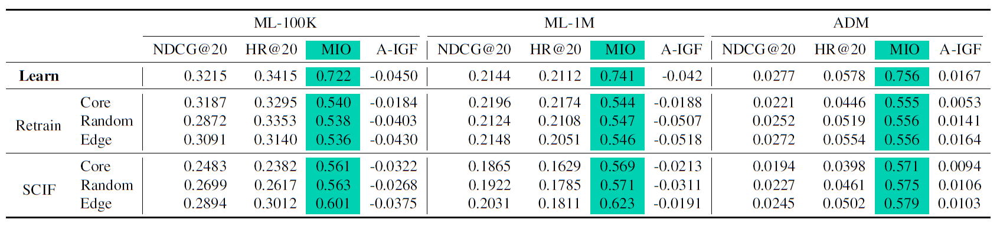
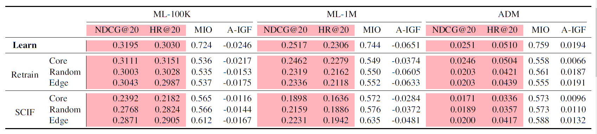
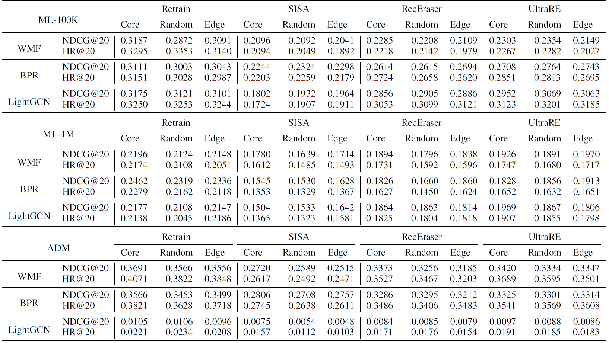
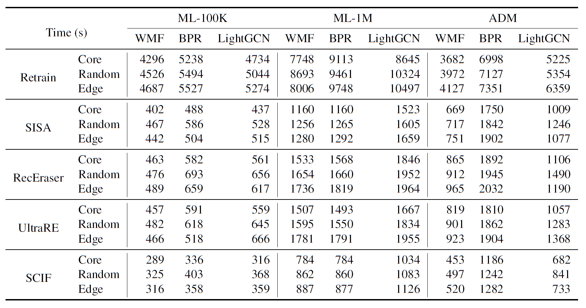
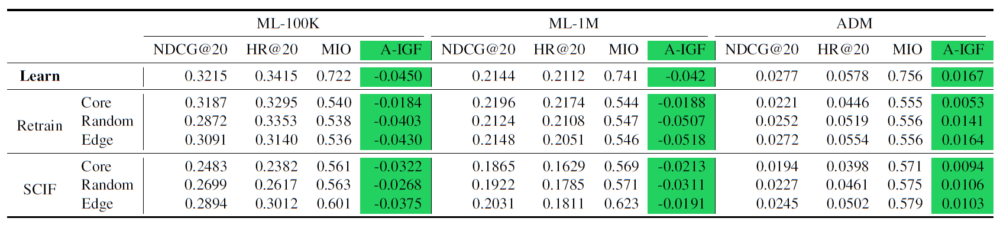

Under model WMF. Results in terms of unlearning completeness (MIO), recommendation utility (NDCG and HR), and recommendation fairness (A-IGF) for the approximate recommendation unlearning method (SCIF).

Under model BPR. Results in terms of unlearning completeness (MIO), recommendation utility (NDCG and HR), and recommendation fairness (A-IGF) for the approximate recommendation unlearning method (SCIF).
Under model WMF. Results in terms of unlearning completeness (MIO), recommendation utility (NDCG and HR), and recommendation fairness (A-IGF) for the approximate recommendation unlearning method (SCIF).
Under model BPR. Results in terms of unlearning completeness (MIO), recommendation utility (NDCG and HR), and recommendation fairness (A-IGF) for the approximate recommendation unlearning method (SCIF).

Under model WMF, BPR and LightGCN. Results in terms of recommendation utility (NDCG and HR) for exact recommendation unlearning methods (SISA, RecEraser and UltraRE).

Under model WMF, BPR and LightGCN. Results in terms of unlearning efficiency (running time in seconds ↓).

Under model WMF. Results in terms of unlearning completeness (MIO), recommendation utility (NDCG and HR), and recommendation fairness (A-IGF) for the approximate recommendation unlearning method (SCIF).

Under model BPR. Results in terms of unlearning completeness (MIO), recommendation utility (NDCG and HR), and recommendation fairness (A-IGF) for the approximate recommendation unlearning method (SCIF).
Under model WMF. Results in terms of recommendation fairness (A-IGF and shardGF) for exact recommendation unlearning methods (SISA, RecEraser and UltraRE).
Under model BPR. Results in terms of recommendation fairness (A-IGF and shardGF) for exact recommendation unlearning methods (SISA, RecEraser and UltraRE).
Under model LightGCN. Results in terms of recommendation fairness (A-IGF and shardGF) for exact recommendation unlearning methods (SISA, RecEraser and UltraRE).
A visualized evaluation overview of recommendation
unlearning methods in four aspects
(↑), where the result is the normalized average
outcome obtained across all models and datasets,
using random data as the unlearning set. The recommendation
fairness is measured by A-IGF.